Нормальное распределение
Нормальное распределение

\[f(x) = \cfrac {1}{\sigma \sqrt{2 \pi}} \; e^{- \: \cfrac{(x-\mu)^2}{2\sigma^2}}\]
- \(\mu\) — среднее значение
- \(\sigma\) — стандартное отклонение
Это кратко записывается как \(x \sim N(\mu, \sigma)\)
Вероятности — это площади под кривой распределения
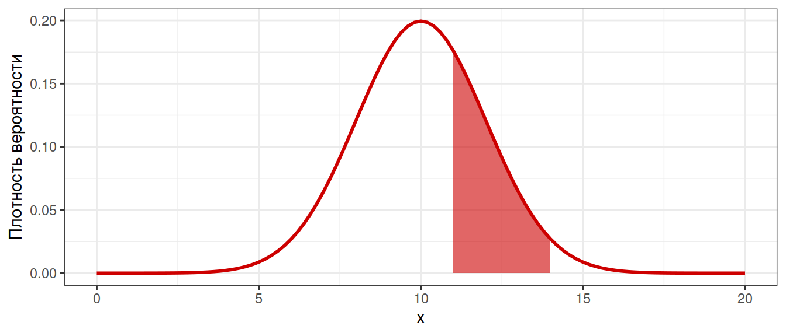
\(-\infty < x < +\infty\).
Площадь под всей кривой \(= 1\).
Вероятность встречи значений из определенного промежутка можно узнать, проинтегрировав функцию распределения.
Стандартное нормальное распределение
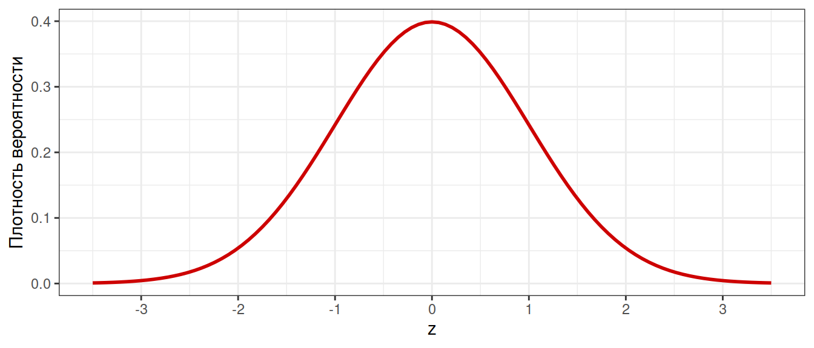
\[N(0, 1)\]
Стандартизация (Z-преобразование)
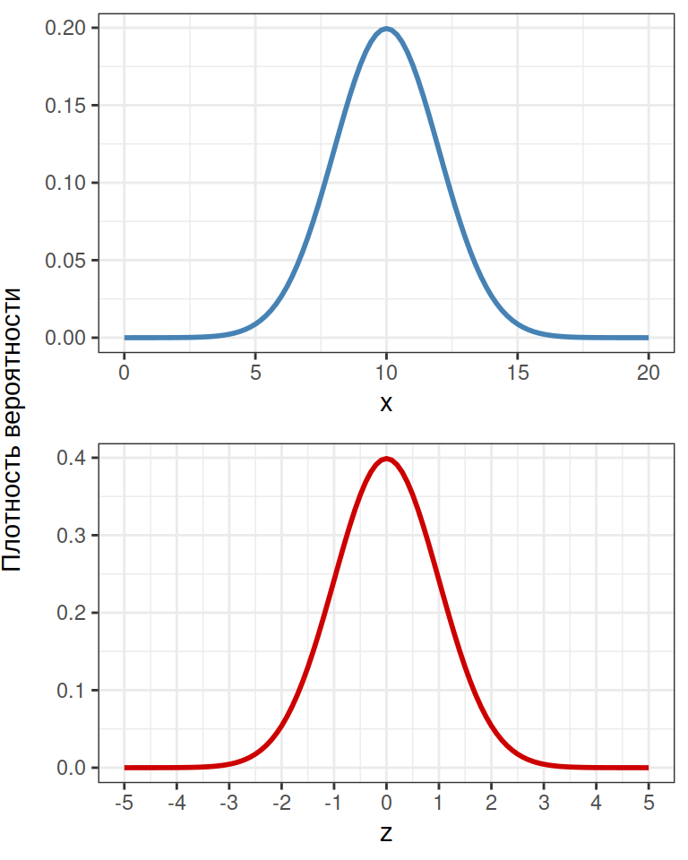
\[z = \frac{x - \mu}{\sigma}\]
После стандартизации любое нормальное распределение превращается в стандартное нормальное:
\[Z \sim N(0, 1)\]
Задание 1
Стандартизуйте вектор 1:5
Чему после стандартизации будет равно среднее?
Стандартное отклонение?
Стандартизация
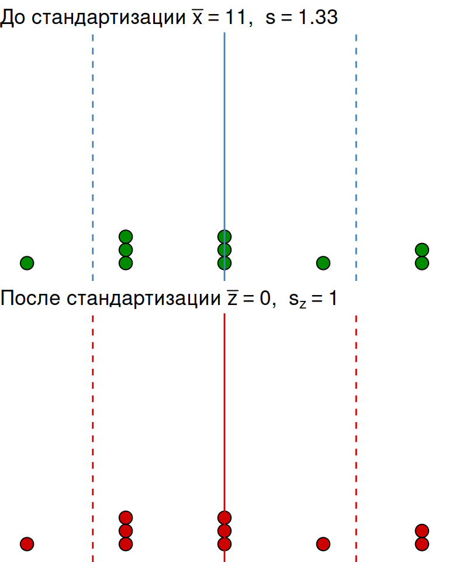
\[z_i=\frac{x_i - \bar{x}}{s}\]
Стандартизованная величина (Z-оценка) показывает, на сколько стандартных отклонений значение отличается от среднего
После стандартизации всегда:
- среднее \(\bar{z} = 0\)
- стандартное отклонение \(s_{z} = 1\)
Стандартизация позволяет уравнять шкалы, в которых измерены переменные
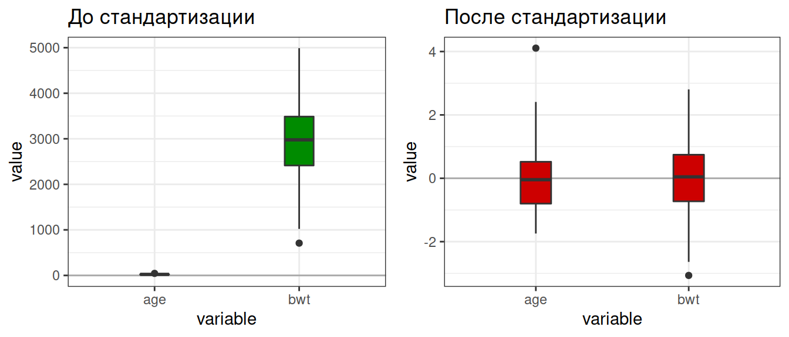
Проверка на нормальность
Квантильный график
По оси \(X\) отложены квантили стандартного нормального распределения, по оси \(Y\) — квантили данных. Если \(x \sim N(\mu,\sigma)\), то точки лягут на прямую линию.
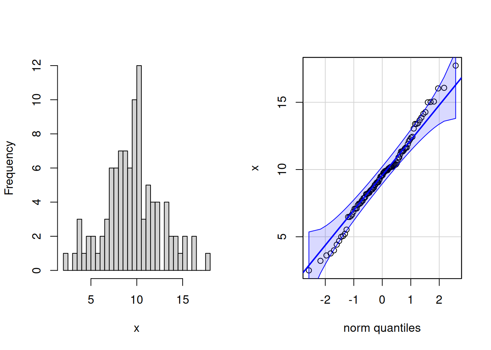
Квантильный график в R
set.seed(9128) my_vector <- rnorm(n = 150, mean = 10, sd = 3) library(car) qqPlot(my_vector, id = FALSE) # квантильный график
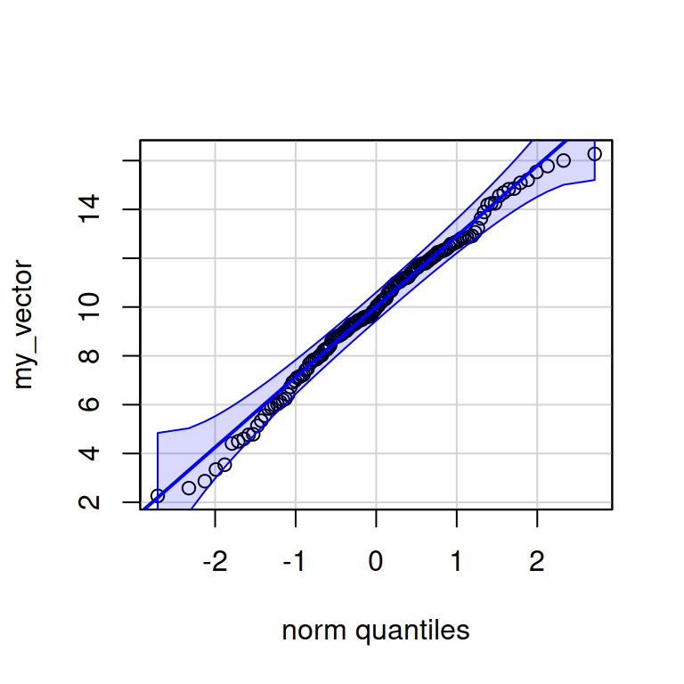
Задание 2
Выполните по одному блоки кода (см. код к этой презентации).
Что вы можете сказать о свойствах распределений, изображенных на квантильных графиках?
Бимодальное (двувершинное) распределение
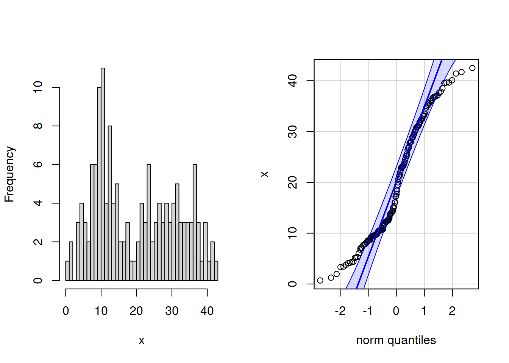
Дискретное распределение с длинным правым хвостом
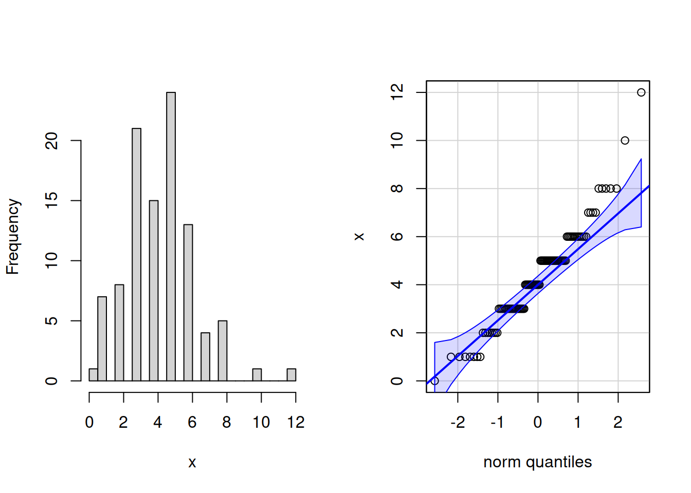
Непрерывное распределение с толстыми хвостами
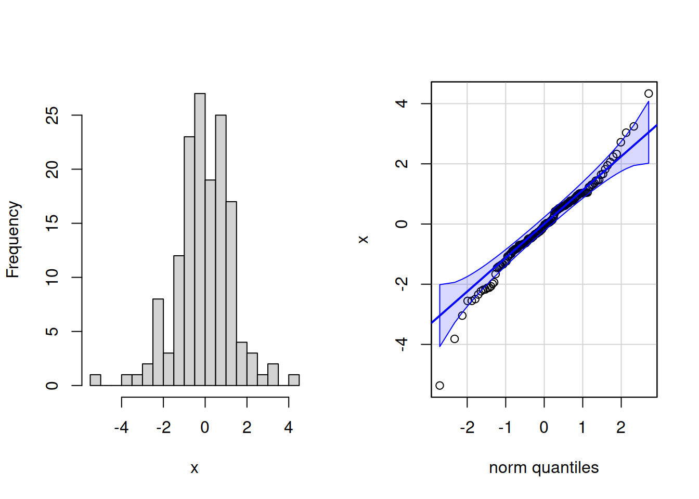
Непрерывное распределение с длинным правым хвостом
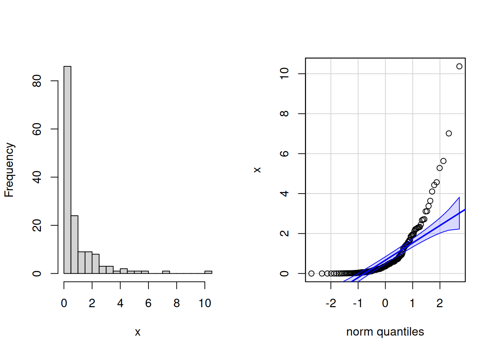
Задание 3
Проверьте при помощи квантильного графика, подчиняются ли эти переменные нормальному распределению:
- Рост американских женщин (датасет
women) - Длина чашелистиков у ирисов (датасет
iris) - Число пойманных рысей в Канаде с 1821 по 1934г. (датасет
lynx)
Решение (3.1)
data("women")
str(women)
## 'data.frame': 15 obs. of 2 variables: ## $ height: num 58 59 60 61 62 63 64 65 66 67 ... ## $ weight: num 115 117 120 123 126 129 132 135 139 142 ...
qqPlot(women$height, id = FALSE)
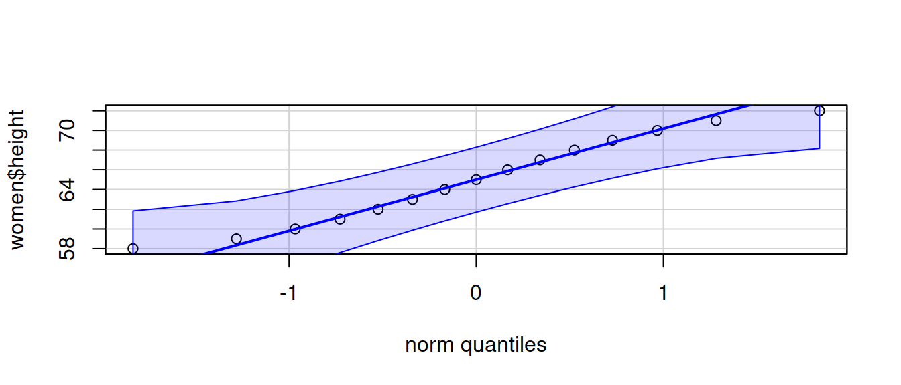
Решение (3.2)
data("iris")
str(iris)
## 'data.frame': 150 obs. of 5 variables: ## $ Sepal.Length: num 5.1 4.9 4.7 4.6 5 5.4 4.6 5 4.4 4.9 ... ## $ Sepal.Width : num 3.5 3 3.2 3.1 3.6 3.9 3.4 3.4 2.9 3.1 ... ## $ Petal.Length: num 1.4 1.4 1.3 1.5 1.4 1.7 1.4 1.5 1.4 1.5 ... ## $ Petal.Width : num 0.2 0.2 0.2 0.2 0.2 0.4 0.3 0.2 0.2 0.1 ... ## $ Species : Factor w/ 3 levels "setosa","versicolor",..: 1 1 1 1 1 1 1 1 1 1 ...
op <- par(mfrow = c(1, 2)) qqPlot(iris$Sepal.Length, id = FALSE) hist(iris$Sepal.Length)
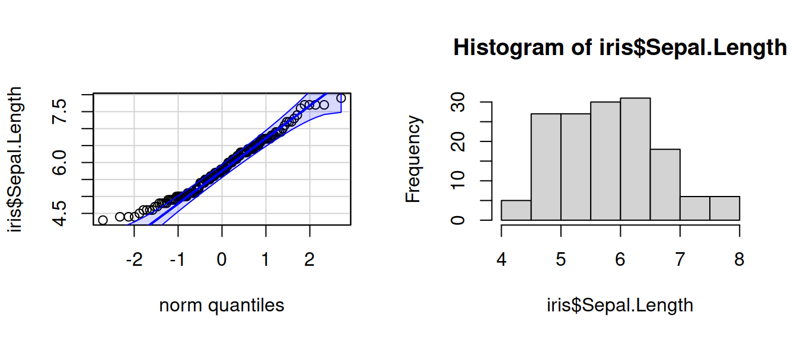
par(op)
Решение (3.3)
data("lynx")
str(lynx)
## Time-Series [1:114] from 1821 to 1934: 269 321 585 871 1475 ...
op <- par(mfrow = c(1, 2)) qqPlot(lynx, id = FALSE) hist(lynx)
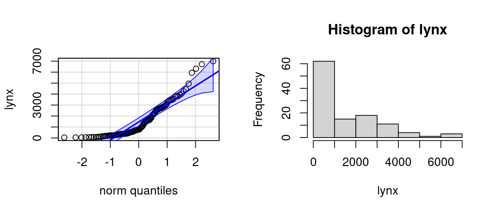
par(op)
Оценка вероятностей при помощи распределений
Кривые распределений можно использовать для оценки вероятностей
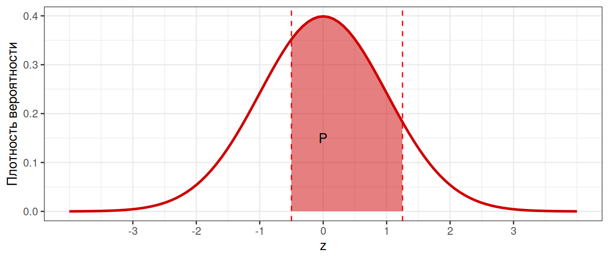
Площадь под всей кривой распределения равна 1
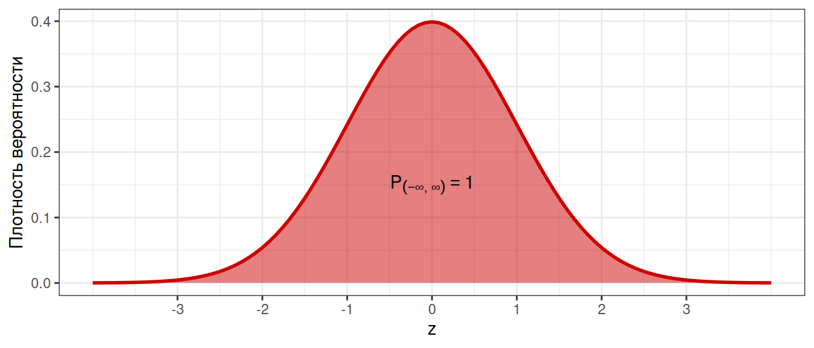
Вероятность конкретного значения нельзя определить
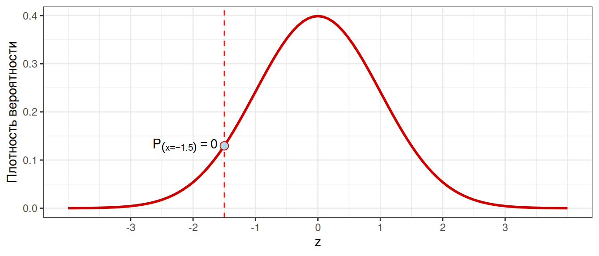
Можно определить вероятность того, что значение будет меньше заданного
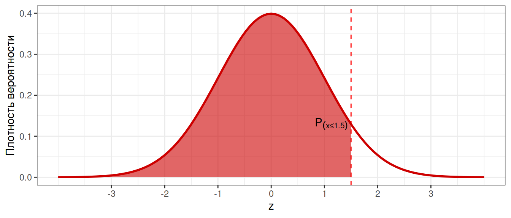
Остальные площади легко найти при помощи простых арифметических действий с площадями
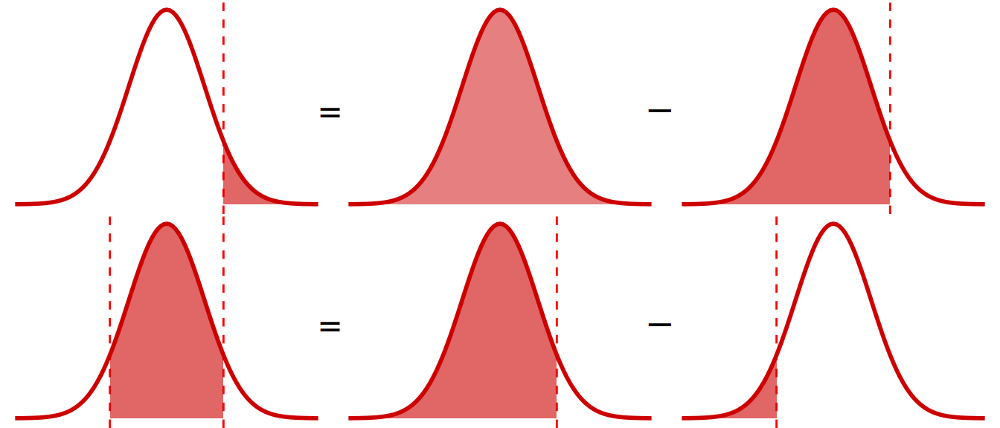
Пример: Размеры улиток
В выборке улиток средний диаметр раковины 5 см со стандартным отклонением 1.5 см.
- Какова вероятность того, что случайно выбранная улитка окажется меньше 3 см?
- Какова вероятность того, что случайно выбранная улитка окажется больше 6 см?
- Какова доля улиток с размером раковины в пределах 3–6 см?

tres caracoles by Alberto Villen on Freeimages.com
Вероятность встретить значение меньше заданного
В выборке улиток средний диаметр раковины 5 см со стандартным отклонением 1.5 см.
Какова вероятность того, что случайно выбранная улитка окажется меньше 3 см?
Z_1 <- (3 - 5) / 1.5 pnorm(q = Z_1)
## [1] 0.0912
# или то же самое pnorm(q = 3, mean = 5, sd = 1.5)
## [1] 0.0912
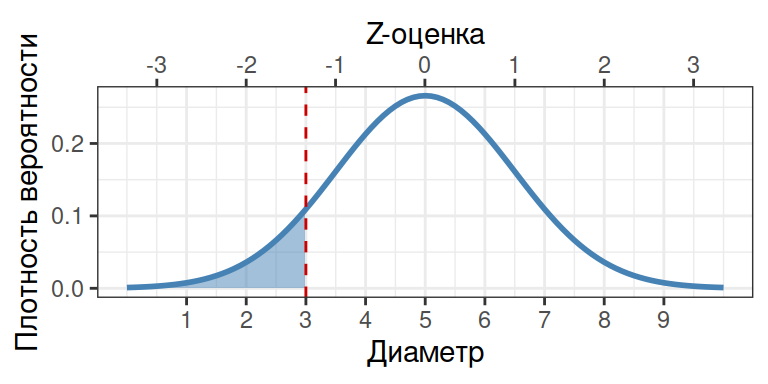
Вероятность встретить значение больше заданного
В выборке улиток средний диаметр раковины 5 см со стандартным отклонением 1.5 см.
Какова вероятность того, что случайно выбранная улитка окажется больше 6 см?
Мы умеем интегрировать только влево от выбранного значения, поэтому
- выясняем вероятность встретить значение меньше заданного \(p\)
- находим комплементарную вероятность \(1 - p\)
1 - pnorm(q = 6, mean = 5, sd = 1.5)
## [1] 0.252
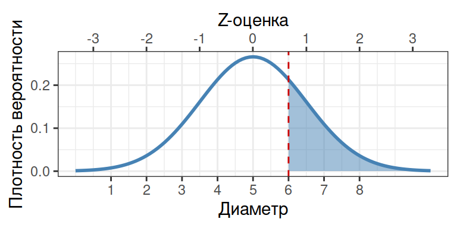
Вероятность встретить значение в заданных пределах
В выборке улиток средний диаметр раковины 5 см со стандартным отклонением 1.5 см.
Какова доля улиток с размером раковины в пределах 3–6 см?
pnorm(q = 6, mean = 5, sd = 1.5) - pnorm(q = 3, mean = 5, sd = 1.5)
## [1] 0.656
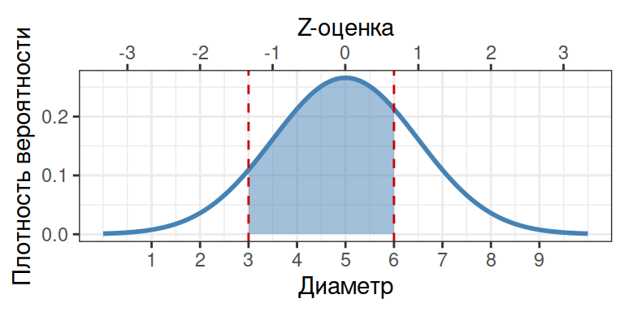
Задание 4
Средний рост 18-летних мужчин в России 174.7 см со стандартным отклонением 6.65 см. В пилоты берут только людей с ростом от 160 до 190 см (по приказу Минтранса).
Какова вероятность того, что случайно выбранный мужчина окажется ниже 160 см?
Какова вероятность того, что случайно выбранный мужчина окажется больше 190 см?
Какова доля мужчин, не подходящих по росту в пилоты, т.е. меньше 160 и больше 190 см?
Решение (4.1)
Средний рост 18-летних мужчин в России 174.7 см со стандартным отклонением 6.65 см. В пилоты берут только с ростом от 160 до 190 см (по приказу Минтранса).
Какова вероятность того, что случайно выбранный мужчина окажется ниже 160 см?
Z_short <- (160 - 174.7) / 6.65 pnorm(q = Z_short)
## [1] 0.0135
# или то же самое pnorm(q = 160, mean = 174.7, sd = 6.65)
## [1] 0.0135
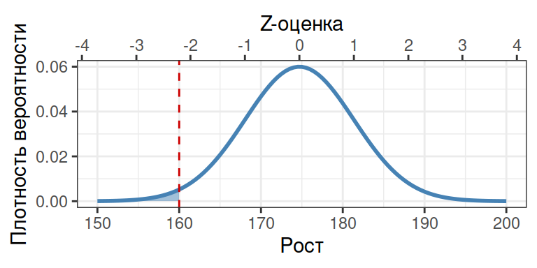
Решение (4.2)
Средний рост 18-летних мужчин в России 174.7 см со стандартным отклонением 6.65 см. В пилоты берут только с ростом от 160 до 190 см (по приказу Минтранса).
Какова вероятность того, что случайно выбранный мужчина окажется больше 190 см?
1 - pnorm(q = 190, mean = 174.7, sd = 6.65)
## [1] 0.0107
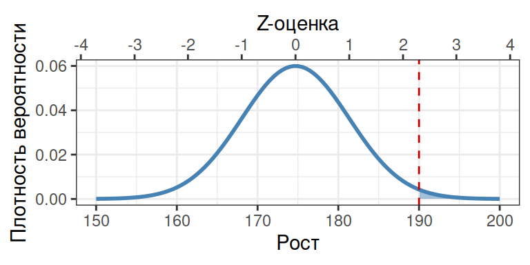
Решение (4.3)
Средний рост 18-летних мужчин в России 174.7 см со стандартным отклонением 6.65 см. В пилоты берут только с ростом от 160 до 190 см (по приказу Минтранса).
Какова доля мужчин, не подходящих по росту в пилоты, т.е. меньше 160 и больше 190 см?
(1 - pnorm(q = 190, mean = 174.7, sd = 6.65)) + pnorm(q = 160, mean = 174.7, sd = 6.65)
## [1] 0.0242

Задание 5
Средний рост девушек в 16 лет — 162.2 см со стандартным отклонением 6.0 см.
В пилоты берут только людей с ростом от 160 до 190 см (по приказу Минтранса).
Какой процент девушек подходит по росту в пилоты?
Решение
Средний рост девушек в 16 лет — 162.2 см со стандартным отклонением 6.0 см.
В пилоты берут только людей с ростом от 160 до 190 см (по приказу Минтранса).
Какой процент девушек подходит по росту в пилоты?
pnorm(q = 190, mean = 162.2, sd = 6.0) - pnorm(q = 160, mean = 162.2, sd = 6.0)
## [1] 0.643
Только 64.3 % девушек пройдут в пилоты по росту.
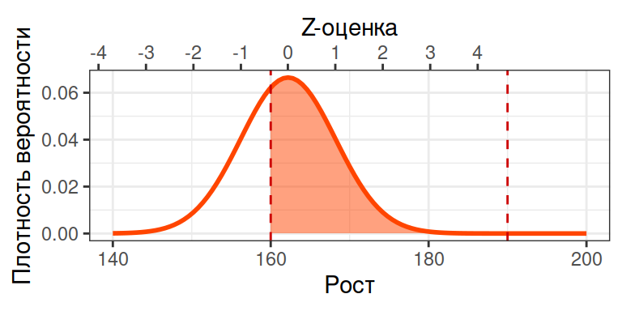
Задание 6
Предположим, что вес новорожденных нормально распределен со средним значением 3500 г и стандартным отклонением 600 г.
- Какой процент детей рождается с весом больше 3200г.?
- Какой процент детей рождается с весом в пределах 2500-4500г.?
Решение (1)
Предположим, что вес новорожденных нормально распределен со средним значением 3500 г и стандартным отклонением 600 г.
Какой процент детей рождается с весом больше 3200г.?
1 - pnorm(q = 3200, mean = 3500, sd = 600)
## [1] 0.691
69.1 % детей рождается с весом больше 3200г.

Решение (2)
Предположим, что вес новорожденных нормально распределен со средним значением 3500 г и стандартным отклонением 600 г.
Какой процент детей рождается с весом в пределах 2500-4500г.?
pnorm(q = 4500, mean = 3500, sd = 600) - pnorm(q = 2500, mean = 3500, sd = 600)
## [1] 0.904
90.4 % детей рождается с весом в пределах 2500-4500г.
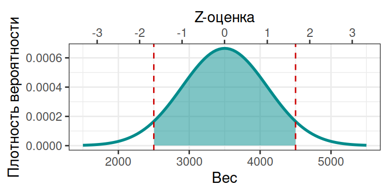
Take-home messages
- Нормальное распределение \(N(\mu,\sigma)\)
- Стандартное нормальное распределение — \(N(0, 1)\)
- Стандартизация — \(z = \frac{x - \mu} {\sigma}\)
- Квантильный график — графический метод проверки формы распределения
- Вероятность попадания величины в любой интервал можно найти при помощи интегрирования